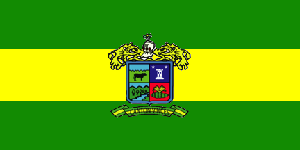
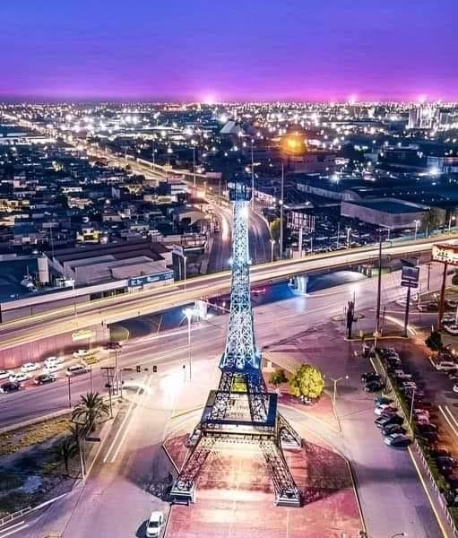
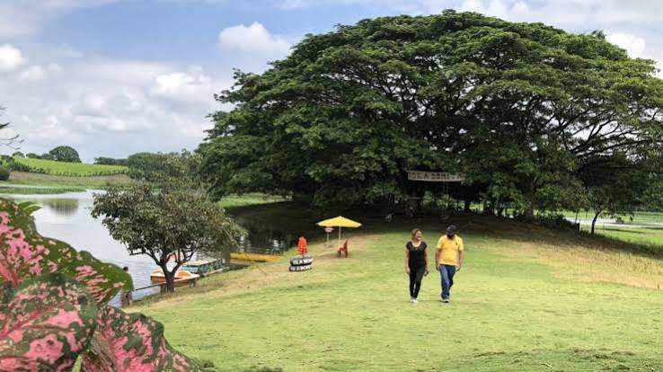
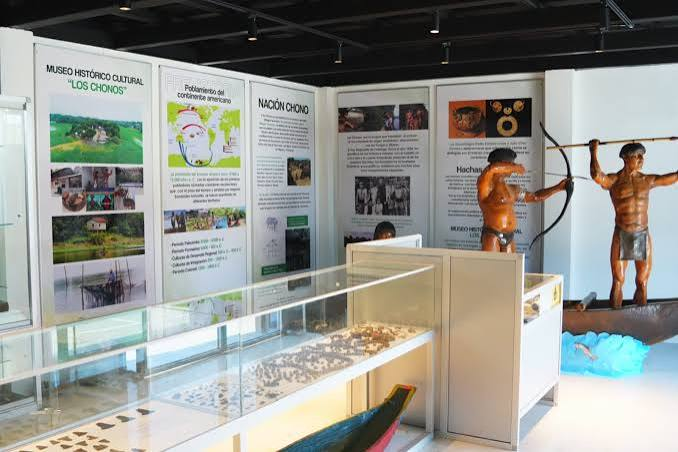
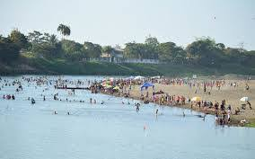
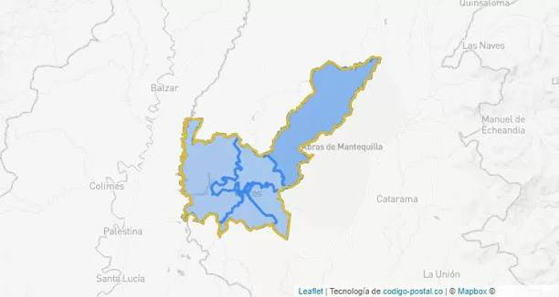

El cantón Vinces está ubicado en la provincia de Los Ríos, Ecuador. Sus orígenes se remontan al siglo XVIII y fue cantonizado el 14 de junio de 1845. Es conocido como el "París Chiquito" debido a la influencia de la cultura francesa en su arquitectura y costumbres durante el auge de la producción de cacao. Se caracteriza por su riqueza agrícola, especialmente por el cultivo de cacao, arroz y banano. Además, conserva las tradiciones montubias y atractivos naturales como el humedal Abras de Mantequilla.

Seco de gallina criolla.
Seco de pato.
Bollos de carne.
Muchines de plátano.
Ayampacos.
Cazuela de pescado y camarón.
Caldo de bolas.
Humitas.
Tamales.
Hayacas.
Hornado de cerdo.
Caldo de gallina.
Tapao.
Sango de choclo.
Torrejas de choclo.
Torta de choclo.
Chocolate artesanal.
Son turísticos porque permiten disfrutar del paisaje del río Vinces, caminar, descansar y tomar fotografías. La réplica de la Torre Eiffel representa la influencia francesa en la historia de la ciudad.

Es turístico por su riqueza natural y biodiversidad. Cuenta con numerosas especies de aves, peces y plantas. Los visitantes pueden realizar paseos en canoa y observar aves.

Permite conocer la historia de los antiguos habitantes de la zona, observar piezas arqueológicas, fotografías antiguas y objetos de la cultura montuvia.

Son turísticas porque durante el verano se forman extensas playas de arena donde las familias pueden bañarse, descansar, practicar deportes y disfrutar de actividades recreativas.

El alcalde electo del cantón Vinces es el tecnólogo Juan Alfonso Montalván Cerezo, para el período 2023-2027. Actualmente, la vicealcaldesa Daniela Sauhing Cervantes está encargada temporalmente de la Alcaldía durante su licencia de 60 días.
Según el Censo de Población y Vivienda de 2022 del INEC, el cantón Vinces cuenta con 80.909 habitantes, distribuidos entre su cabecera cantonal y la parroquia rural Antonio Sotomayor.

Volver al índice principal